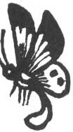
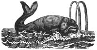
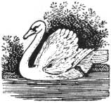

Los Angeles developers may have gotten rid of more m a fire hazard when they dozed a patch of scrub grass in the Palos Verdes hills. They may have eradicated the last of the endangered Palos Verdes blue butterflies.
As late as 1981, the butterfly was common to a few brushy areas of the Palos Verdes peninsula, south of Los Angeles. But researchers could find only seven in 1983... and this year none could be found. If, as federal officials believe, the Palos Verdes butterfly is extinct, it's the first species protected under the Endangered Species Act to have disappeared forever.
Japanese diplomats have reportedly been pressuring the U.S. Department of State to allow Japanese whalers to continue killing sperm whales. According to an International Whaling Commission decision made in 1981, the hunting of sperm whales was supposed to end forever after the spring of 1984. But the Japanese hope to convince the United States not to enact the economic sanctions that were agreed to at that meeting.
Two U.S. laws could come into play: one that allows the federal government to restrict fishery-product imports from any country found to be "diminishing the effectiveness" of any international fishing agreement; another that allows the U.S. to take away no less than 50% of a country's fishing allocation in U.S. waters for diminishing the effectiveness of the whaling commission.
In addition to objections to the cessation of sperm whale hunting, Brazil, the Soviet Union, and Japan have filed others relative to the minke whale quotas set by the IWC in 1984. Present levels are too low to support both Soviet and Japanese whaling fleets.
British wildlife biologists report reaching a disturbing conclusion about dying swans. In a recent investigation, the scientists found that 85% of the dead birds had succumbed to lead poisoning after swallowing lead fishing weights.
Water birds face this hazard in any area that is fished regularly, but the solution is simple: Nontoxic, lead-free sinkers cost a little more, but they're worth their weight in waterfowl.
Even though they're faced with four more years of the up-to-now environmentally destructive Reagan presidency, environmentalists are not about to give up. As David Brower, founder of Friends of the Earth, put it, "Walter Mondale said, 'From defeat are sown the seeds of victory.' I say, 'Let's plant them fast.' "
And others found a bit of silver lining the clouds.
Senators and representatives with good environmental positions did well on November 6, Liz Raisbeck, Friends of the Earth's legislative director, noted. "Progressive incumbents won overwhelmingly. Considering the Reagan landslide, this is very significant," she said.
The brightest spots for environmentalists were four new senators:
John Kerry, a strong campaigner against acid rain, was the winner in Massachusetts.
Albert Gore Jr., a former congressman from Tennessee, is the new senator from that state. He has fought hard for toxic-waste cleanup and replaces Howard Baker, a strong proponent of nuclear power.
Tom Harkin, a House leader on pesticide-reform legislation and an opponent of the MX missile, was elected the new senator from Iowa.
Paul Simon, from coal-mining Illinois, has shown a strong commitment to strip-mining controls.
Of 96 candidates endorsed by the Friends of the Earth Political Action Committee, 70 (73%) won. Of 25 actively supported by FOE PAC, 17 (68%) were victorious.
Serious losses hit environmentalists in five House races, however. William Ratcheford of Connecticut, Brock Evans of Washington, Jerry Patterson of California, Jamie Clarke of North Carolina, and W Mitchell of Colorado went down to defeat. They would have been powerful voices for a healthier planet.
EDITOR'S NOTE: The worldwide organization called Friends of the Earth is one of the most effective environmental groups in existence today, and the activities of FOE-along with a broad range of other news concerning ecological developments-are described each month in its publication tilled Not Man Apart. You can become a member of Friends of the Earth, and receive the excellent tabloid, by sending $25 ($100 for sponsor, $1,000 for life, $12 student/low income)-or $15 for a subscription only-to FOE, 1045 San-some St., San Francisco, CA 94111.
|
 |
 |
 |